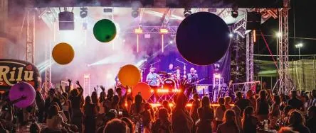

ven 9 ott
MyPlay Coldplay Tribute Show live @ Sagra San Daniele, Fregona (TV)
MyPlay Coldplay Tribute Show: il 9 ottobre live alla Sagra di San Daniele di Fregona
 Indicazioni
Indicazioni
- Costi e prenotazioni
- Costo non indicato · Prenotazione non indicata
- Programma
- Programma da verificare. Apri la fonte ufficiale per orari e possibili aggiornamenti.
- In caso di maltempo
- Nessuna indicazione specifica pubblicata.
- Note
- Acquisito automaticamente dalla fonte.
L’EVENTO
Descrizione completa
MyPlay Coldplay Tribute Show: il 9 ottobre live alla Sagra di San Daniele di Fregona
Fregona, Treviso – Venerdì 9 ottobre i MyPlay Coldplay Tribute Show saranno in concerto alla Sagra di San Daniele di Fregona, con un live dedicato a oltre vent’anni di musica dei Coldplay.
La scaletta attraversa le diverse fasi della carriera della band britannica, dai primi album alle produzioni più recenti. Tra i brani proposti trovano spazio Yellow, The Scientist, Clocks, Fix You e Viva La Vida, accanto a Paradise, Adventure of a Lifetime, Hymn for the Weekend, Higher Power, My Universe e A Sky Full of Stars.
Lo spettacolo dei MyPlay Coldplay Tribute Show viene sviluppato lavorando insieme sulla parte musicale e sulla produzione tecnica. La band suona dal vivo, mentre luci programmate, visual, contenuti video ed effetti scenici seguono la struttura della scaletta e cambiano impostazione a seconda delle caratteristiche dei singoli brani.
La varietà della discografia dei Coldplay rappresenta infatti uno degli elementi centrali del progetto: le composizioni più essenziali dei primi anni convivono con brani nei quali synth, elettronica e produzione assumono un ruolo molto più marcato. Lo show viene costruito proprio per mantenere riconoscibili queste differenze.
Nato nella primavera del 2025, il progetto MyPlay Coldplay Tribute Show affianca alla ricerca musicale un lavoro specifico sulla componente scenica e tecnica. Arrangiamenti, suono, programmazione luci e contenuti visivi vengono sviluppati come parti dello stesso spettacolo.
I MyPlay Coldplay Tribute Show sono Gabriele Corrente alla voce, Francesco Nichele alle chitarre e programmazioni, Enrico Cipolla al basso e Massimo Andreetta alla batteria.
Parte integrante del progetto è lo staff tecnico e creativo, con Andrea Pedron di Officine Eventi al suono, Marco Scolaro alle luci, Beppe Acacia alla fotografia, Damian Laing ai contenuti video e Cristian Fior alla realizzazione dei video ufficiali.
L’appuntamento è per venerdì 9 ottobre alle ore 21:00, alla Sagra di San Daniele di Fregona, tradizionale manifestazione del territorio legata alla comunità di Osigo, in provincia di Treviso.
https://www.facebook.com/events/1066694072660089
Sito ufficiale MyPlay Coldplay Tribute Show:
IL PROGRAMMA
Programma e orari
Appuntamenti raccolti dalle fonti elencate. Dove manca un orario, non è ancora disponibile in questa scheda.
Programma pubblicato
- Dal 2026-10-09 al 2026-10-09
INFORMAZIONI UTILI
Prima di partire
- Controllare la fonte prima di partire.
ORGANIZZAZIONE